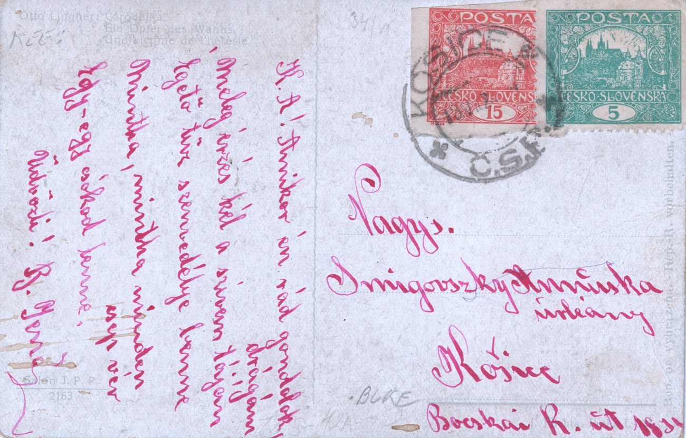

Un 15h non dentelé de la planche VI utilisé postalement — Košice 2, 13. VII. 1920
Une carte postale affranchie de deux Hradčany — un 15 h rouge brique et un 5 h vert clair — paraît à première vue anodine. L’oblitération KOŠICE 2 * Č.S.P. à la date lisible 13. VII. 1920 annule pourtant un timbre qui mérite l’attention : le 15h est non dentelé et, comme l’a montré la détermination de la planche et de la position, il provient de la 6e planche d’impression. La carte est conservée entière ; les illustrations ci-dessous ne sont que des détails de son affranchissement.

La date du 13 juillet 1920 se situe dans la période tarifaire III (15 mars – 31 juillet 1920), durant laquelle le tarif intérieur pour une carte postale était de 20 h. L'affranchissement de 15 h + 5 h = 20 h correspond exactement à ce tarif — il s'agit donc d'une carte postale correctement affranchie juste avant la fin de la période III, moins de trois semaines avant le passage au tarif nettement plus élevé de la période IV (carte postale à 40 h à partir du 1er août 1920).

Les feuilles de 15h non dentelées sont couramment attestées pour les planches d’impression 1 et 2. Un timbre non dentelé utilisé postalement provenant de la planche 5 ou de la planche 6 est en revanche d’une occurrence rare — et c’est précisément une telle pièce qui a pu être attestée ici, avec une date d’usage complète.
Détermination de la planche et de la position
Le timbre a été déterminé en combinant la comparaison informatique avec une bibliothèque de référence de timbres usagés (plus de 11 000 exemplaires enregistrés des sept planches) et la méthode classique : le classificateur de planches a d’abord désigné la planche VI (avec une probabilité de 0,99), puis le modèle de position au sein de la planche a désigné la position 34. La détermination a été confirmée par des défauts ponctuels — la constellation de points dans le ciel à droite de la cathédrale et le point caractéristique juste à gauche de la pointe de la sixième tourelle.


Une curiosité de cet affranchissement : le timbre à 5h collé recouvre le bord droit du 15h — environ un sixième de la largeur du dessin n’était donc pas visible lors de la détermination. En bas subsiste la marge de feuille avec la signature MUCHA.